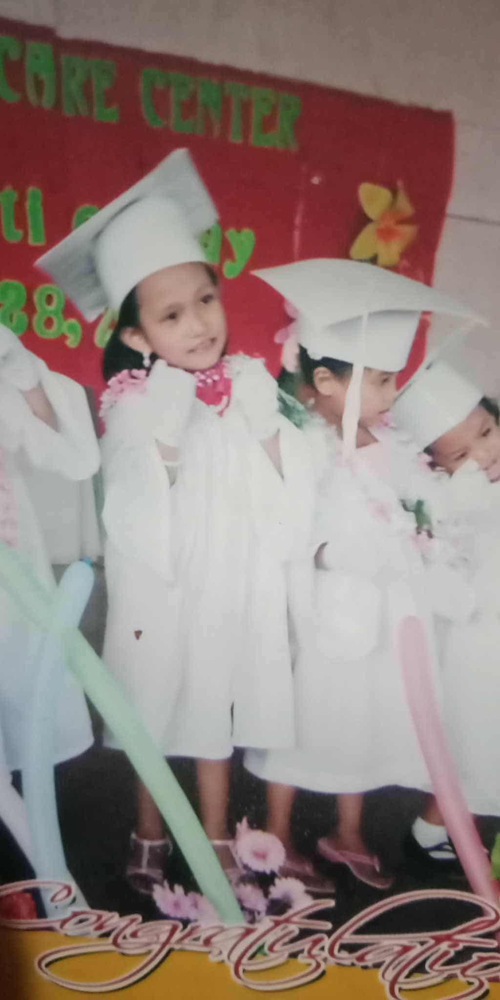
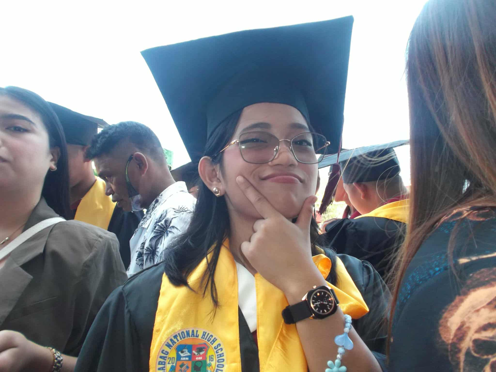

Elementary School
My elementary life was simple yet full of memories. Back then, I was very shy — I didn’t like taking pictures or even being in one because I was scared and insecure. Pero bisan pa ana, I had five childhood best friends who made my school days so much fun. We always ate together during lunch or snack time and we were classmates from Grade 1 to 3. And those friends made me become a little confident and more friendly. I still remember the time nga nihilak gyud ko kay dili na mi classmates, so I begged Mama to transfer me to their section — and luckily, she agreed. That moment showed how much I valued friendship. Until now, we still talk sometimes, though not as often since we’re all busy with life. During my elementary years, I also joined many school activities like DBLC, where our school proudly became the champion! Every year, I joined different school activities. Pero pag Grade 5 to 6, niundang ko kay ni balik akong ka-shy ug insecurities. Still, those years were filled with fun — waking up early for the flag ceremony at 7 a.m., doing the same morning exercises with everyone, and joining school games. It was truly a unique and joyful time, very different from my other school journeys.
High School
Transitioning to high school felt like stepping into a new world. The school was a bit far from our house, and it was my first time riding a jeep or tricycle alone. Naay time nga tungod sa ka-shy nako, wala ko kaingon ug “para,” mao to nalapas ko sa among balay! Good thing someone else said “para,” so I got off and walked home — luckily, not too far. In this stage, I began to discover more about myself. It was during high school nga ni-evolve akong drawing skills — diri ko naka-realize nga kabalo diay ko mo-draw, though di pa kaayo master. I also met teachers who were very strict and gave us tons of projects, but they helped me become more disciplined and hardworking. Sadly, quarantine came and from Grade 8 to 10, we shifted to modular learning. It was challenging, but it also became a time of self-growth. When classes went back to face-to-face, I became more confident and made many new friends. My high school life taught me courage, creativity, and the beauty of stepping out of my comfort zone.
College

Now, here I am — in my college chapter. This phase of my life feels both exciting and challenging. My confidence has improved a lot, and I’ve learned to be more competitive, joining school events, games, and activities. College made me realize that success doesn’t rely only on notebooks or notes — it’s all about your mindset, determination, and good health. Each day, I’m learning not just lessons from books but also lessons about life itself. I’m hopeful for my future — manifesting that someday, I can become a cum laude. But beyond achievements, I keep my faith strong. I trust God’s timing and believe that everything happens according to His plan. 💖